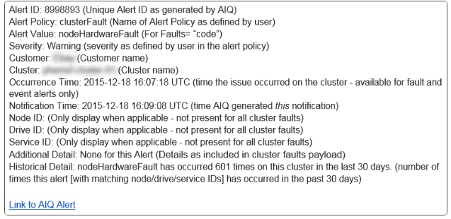

要求變更文件
要求變更文件 編輯此頁面
編輯此頁面 瞭解如何作出貢獻
瞭解如何作出貢獻警示
貢獻者
檢視警示記錄
您可以檢視未解析或已解析警示的歷程記錄。
-
選取*警示*>*歷程記錄*。
-
選取*未解析*或*已解析*索引標籤、即可檢視叢集警示的歷程記錄。
-
（選用）選取
 圖示、將資料匯出至CSV檔案。
圖示、將資料匯出至CSV檔案。
警示記錄詳細資料
All ClustersView中警示下拉式功能表中的*歷程記錄*頁面最多可顯示10000個警示歷程記錄項目、包括過去30天內解決的所有未解決警示和警示。
下列清單說明您可以使用的詳細資料：
| 標題 | 說明 |
|---|---|
警示ID |
每個警示的唯一ID。 |
已觸發 |
警示在SolidFire Active IQ 不屬於叢集本身的情況下、於整個過程中觸發的時間。 |
上次通知 |
最近一封警示電子郵件的傳送時間。 |
已解決 |
顯示警示原因是否已解決。 |
解決時間 |
解決問題的時間。 |
原則 |
這是使用者定義的警示原則名稱。 |
嚴重性 |
建立警示原則時指派的嚴重性。 |
目的地 |
選取以接收警示電子郵件的電子郵件地址。 |
公司 |
與警示相關的客戶名稱。 |
叢集 |
顯示新增警示原則的叢集名稱。 |
觸發 |
觸發警示的使用者定義設定。 |
檢視警示原則
「所有叢集檢視」中「警示」下拉式功能表中的「原則」頁面會顯示所有叢集的下列原則資訊。
下列清單說明您可以使用的詳細資料：
| 標題 | 說明 |
|---|---|
原則名稱 |
使用者定義的警示原則名稱。 |
目的地 |
警示原則中定義的電子郵件地址。 |
嚴重性 |
警示原則中指派的嚴重性。 |
叢集 |
警示原則中定義的每個叢集的數目和名稱。選取資訊圖示以顯示相關的叢集。 |
條件 |
使用者定義的警示觸發時間設定。 |
抑制類型 |
決定要抑制哪些警示和事件。可以使用下列類型：
|
行動 |
選取垂直下拉式功能表、以編輯和刪除所選原則的選項。 |
建立警示原則
您可以建立警示原則、以監控SolidFire Active IQ 來自*《所有叢集檢視》*的資訊（英文）。警示原則可讓您在整個安裝中、透過一個或多個叢集收到狀態或效能事件的通知、以便在更嚴重的事件發生之前或在回應之前採取行動。
-
選取*警示*>*原則*。
-
選取*建立原則*。
-
從*原則類型*清單中選取警示類型。請參閱 警示原則類型。

視所選的原則類型而定、「建立原則」對話方塊中會有其他原則專屬欄位。 -
輸入新警示原則的名稱。
警示原則名稱應說明警示建立的條件。描述性標題有助於輕鬆識別警示。警示原則名稱會顯示為系統其他位置的參考資料。 -
選取嚴重性等級。

警示原則嚴重性等級以色彩編碼、可從*警示*>*歷程記錄頁面*輕鬆篩選。 -
從*可支援的類型*中選取一種類型、以判斷警示原則的抑制類型。您可以選取多種類型。
確認關聯是否合理。例如、您已針對網路警示原則選取*網路抑制*。
-
選取要納入原則的一或多個叢集。

當您在建立原則之後、將新叢集新增至安裝時、叢集不會自動新增至現有的警示原則。您必須編輯現有的警示原則、然後選取要與原則關聯的新叢集。 -
輸入一或多個要傳送警示通知的電子郵件地址。如果您要輸入多個地址、則必須使用一個逗號來分隔每個地址。
-
選取*儲存警示原則*。
警示原則類型
您可以根據*「建立原則*」對話方塊中所列的可用原則類型、從*「警示*」>*「原則*」建立警示原則。
可用的原則警示包括下列類型：
| 原則類型 | 說明 |
|---|---|
叢集故障 |
在發生特定類型或任何類型的叢集故障時傳送通知。 |
活動 |
在發生特定事件類型時傳送通知。 |
故障磁碟機 |
在磁碟機故障時傳送通知。 |
可用磁碟機 |
當磁碟機在_可用_狀態時傳送通知。 |
叢集使用率 |
當使用的叢集容量和效能超過指定百分比時、會傳送通知。 |
可用空間 |
當可用叢集空間低於指定百分比時、會傳送通知。 |
可配置空間 |
當資源配置式叢集空間低於指定百分比時、會傳送通知。 |
收集器未報告 |
在管理節點上執行的支援SolidFire Active IQ 功能收集器無法在SolidFire Active IQ 指定的期間內將資料傳送至支援中心時、會傳送通知。 |
磁碟機耗損 |
當叢集中的磁碟機有低於指定的耗損百分比或保留空間剩餘時、便會傳送通知。 |
iSCSI工作階段 |
當作用中iSCSI工作階段的數目大於指定的值時、會傳送通知。 |
機箱恢復能力 |
當叢集的已用空間大於使用者指定的百分比時、會傳送通知。您應該選取一個百分比、以便在達到叢集恢復臨界值之前及早通知。達到此臨界值之後、叢集便無法再從機箱層級的故障中自動修復。 |
VMware警報 |
當VMware警示觸發並回報SolidFire Active IQ 至VMware時、會傳送通知。 |
自訂保護網域恢復能力 |
當使用空間增加到超過指定的自訂保護網域恢復臨界值百分比時、系統會傳送通知。如果此百分比達到100、表示儲存叢集在自訂保護網域故障發生後、沒有足夠的可用容量可自行修復。 |
節點核心/損毀傾印檔案 |
當服務變得無回應且必須重新啟動時、系統會建立核心檔案或損毀傾印檔案、並傳送通知。這不是正常作業期間的預期行為。 |
編輯警示原則
您可以編輯警示原則、從原則中新增或移除叢集、或變更其他原則設定。
-
選取*警示*>*原則*。
-
選擇功能表以取得更多選項*「Actions」（動作）*。
-
選取*編輯原則*。
原則類型和類型特定的監控條件無法編輯。 -
（選用）輸入新警示原則的修訂名稱。
警示原則名稱應說明警示建立的條件。描述性標題有助於輕鬆識別警示。警示原則名稱會顯示為系統其他位置的參考資料。 -
（選用）選擇不同的嚴重性等級。
警示原則嚴重性等級以色彩編碼、可從「警示」>「歷程記錄」頁面輕鬆篩選。 -
從*可支援的類型*中選取一種類型、以判斷警示原則何時處於作用中狀態的抑制類型。您可以選取多種類型。
確認關聯是否合理。例如、您已針對網路警示原則選取*網路抑制*。
-
（選用）選取或移除與原則的叢集關聯。
當您在建立原則之後、將新叢集新增至安裝時、叢集不會自動新增至現有的警示原則。您必須選取要與原則關聯的新叢集。 -
（選用）修改一或多個要傳送警示通知的電子郵件地址。如果您要輸入多個地址、則必須使用一個逗號來分隔每個地址。
-
選取*儲存警示原則*。
刪除警示原則
刪除警示原則會將其從系統中永久移除。不再傳送該原則的電子郵件通知、也會移除與原則相關的叢集。
-
選取*警示*>*原則*。
-
在「動作」下、選取功能表以取得更多選項。
-
選取*刪除原則*。
-
確認行動。
原則會從系統中永久移除。
檢視抑制的叢集
在「所有叢集檢視」內「警示*」下拉式功能表的「受支援的叢集」頁面上、您可以檢視已抑制警示通知的叢集清單。
NetApp支援或客戶可在執行維護時、抑制叢集的警示通知。如果使用升級抑制功能來抑制叢集的通知、則不會傳送在升級期間發生的一般警示。此外、也有一個完整警示抑制選項、可在指定的期間內停止叢集的警示通知。您可以在「警示」功能表的「歷程記錄」頁面上、檢視任何在通知被抑制時未傳送的電子郵件警示。受抑制的通知會在定義的持續時間過後自動恢復。
下列資訊可在*受支援的叢集*頁面上找到。
| 標題 | 說明 |
|---|---|
公司 |
指派給叢集的公司名稱。 |
叢集ID |
建立叢集時指派的叢集編號。 |
叢集名稱 |
指派給叢集的名稱。 |
開始時間 |
啟動抑制通知的確切時間。 |
結束時間 |
通知抑制排定結束的確切時間 |
類型 |
決定要抑制哪些警示和事件。可以使用下列類型：
|
行動 |
選取選項以隱藏或恢復叢集的通知。 |
隱藏叢集通知
您可以針對單一叢集或多個叢集、隱藏叢集層級的警示通知。
-
執行下列其中一項：
-
從*儀表板*總覽中、選取您要隱藏之叢集的「動作」功能表。
-
從*警示*>*叢集抑制*選取*抑制叢集*。
-
-
在*抑制叢集警示*對話方塊中、執行下列動作：
-
如果您從「抑制叢集」頁面選取「抑制叢集」按鈕、請選取叢集。
-
選取警示抑制類型為*完整*、升級、運算、節點硬體、磁碟機、 網路*或*電源。 深入瞭解抑制類型。
叢集可以有多種抑制類型、但無法共用抑制類型。例如、叢集可以有*完整*、運算*和*磁碟機*抑制、但不能有兩個*完整*抑制。當叢集上已存在抑制功能時、它會呈現灰色。若要取代現有的抑制、請選取*置換現有的、然後選取新的抑制類型。 -
選取一般持續時間、或輸入應抑制通知的自訂結束日期和時間。
-
-
選取* Suppress *。
此動作也會禁止向NetApp支援部門發出特定或所有通知。在叢集抑制生效之後、NetApp支援或任何有權檢視叢集的使用者都可以更新抑制狀態。
結束叢集的叢集抑制
您可以在使用「抑制叢集」功能所套用的叢集上結束叢集警示抑制。這可讓叢集恢復警示報告的正常狀態。
-
從*儀表板*總覽或*警示*>*叢集抑制*、針對您想要恢復正常警示報告的單一或多個叢集進行終止抑制：
-
對於單一叢集、請選取叢集的「動作」功能表、然後選取*「結束抑制」*。
-
對於多個叢集、請選取叢集、然後選取*結束選取的抑制*。
-
警示通知電子郵件
訂閱者若收到系統上觸發的每個警示、將會收到不同的狀態電子郵件。SolidFire Active IQ與警示相關的狀態電子郵件有三種類型：
新警示電子郵件 |
這類電子郵件會在觸發警示時傳送。 |
提醒警示電子郵件 |
只要警示保持作用中、這類電子郵件每24小時會傳送一次。 |
警示已解決電子郵件 |
此類電子郵件會在問題解決時傳送。 |
建立警示原則之後、如果產生此原則的新警示、系統會將電子郵件傳送至指定的電子郵件地址（請參閱 建立警示原則）。
根據報告的錯誤類型、警示電子郵件主旨行使用下列其中一種格式：
-
未解決的叢集故障：[叢集名稱]（[sity]）上的「叢集故障代碼」故障
-
已解決叢集故障：「Resolved：[cluster fault code] fault on [cluster name]（已解決：[叢集故障代碼]故障、位於[cluster name]（[sity]））」
-
未解決的警示：針對[叢集名稱]（[sity]）發出「[原則名稱]警示」
-
已解決警示故障：「Resolved：[policy name] alert on [cluster name]（已解決：[原則名稱]警示、位於[叢集名稱]（[嚴重性]））」
通知電子郵件的內容類似於下列範例： 